Environment & preflight
| Field | Value |
|---|---|
| Base URL | http://localhost:5173 (→ /api on 8080); plugin http://localhost:3004 |
| Auth | New GUEST user e2e-events-1793198641@example.test; plugin admin e2e-plugadmin-1793198729@example.test (+PLUGIN_MANAGEMENT through SQL) |
| Backend | Fresh routes (POST /api/events unauthenticated → 401); DB migrated 0069 → 0070 during preflight |
| SDK | /assets/plugin-sdk.js contains uploadImage |
| Plugin | PUT /api/plugins/events/manifest → 200 (the seeded admin password no longer works) |
| Storage | Disabled: avatar and banner → 409 |
Scenarios
4.1 Plugin discovery with the real backend — ❌ Failed
| # | Action | Expected | Actual | |
|---|---|---|---|---|
| 1 | Home → + → /add | Tile "Wydarzenie" | Present → /add/event | ✅ |
| 2 | Open /add/event | iframe "Formularz nowego wydarzenia" | Fallback "Plugin wydarzeń jest niedostępny" | ❌ |
| 3 | Inspect /api/plugins | extensionPoints | extension_points | ❌ |
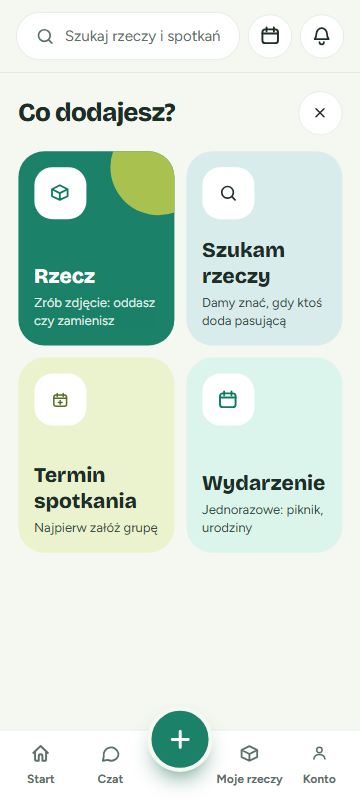
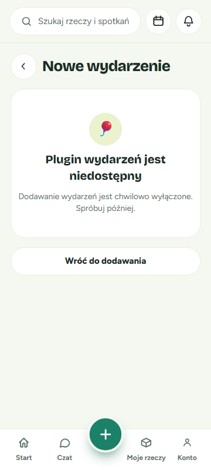
4.2 A — Happy path without banner — ⚠️ Passed with issues
| # | Action | Actual | |
|---|---|---|---|
| 1 | Open form | Header + iframe title OK; RENDER prefix; blank date/time | ✅ |
| 2 | Submit state | aria-disabled="true" + hint via aria-describedby | ✅ |
| 3 | Fill fields | Counter "50 / 2000" | ✅ |
| 4 | Add place in sheet | POST /api/locations 201; selected; focus back on trigger | ✅ |
| 5 | Save | POST /api/events 201, naive 2026-11-15T14:00:00/18:00:00 | ✅ |
| 6 | Confirmation | "niedziela, 15 listopada · 14:00–18:00" + place | ✅ |
| 7 | Wróć do dodawania | /add + toast "Wydarzenie „Piknik testowy E2E” zapisane" | ✅ |
| 8 | DB | Row with the caller's party, naive times | ✅ |
Issues: needs the shim (C1); stale banner error visible (m2).


4.3 B — Banner, storage disabled — ✅ Passed
Preview with Zmień/Usuń → two-step saving with natively disabled "Zapisywanie…" → multipart upload (X-Requested-With: PluginFetch, Bearer) → 409 → banner.failed + "Dodawanie zdjęć jest chwilowo niedostępne" → retry (409 again) → "Pomiń baner" → saved card "piątek, 20 listopada · 16:30" → "Dodaj kolejne" resets the form.
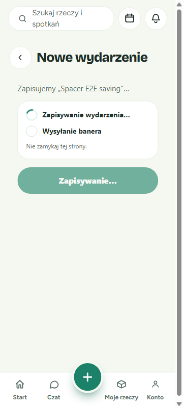


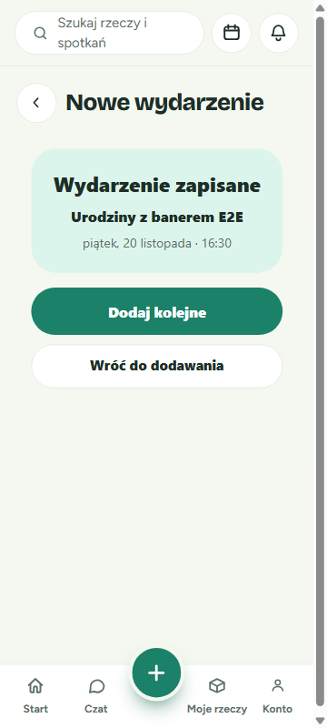
4.4 C — Validation — ⚠️ Passed with issues
| Check | Text shown | |
|---|---|---|
| Blocked submit click | "Podaj nazwę wydarzenia." · "Podaj datę i godzinę początku." (+ aria-invalid / describedby) | ✅ |
| Name "ab" | "Nazwa musi mieć od 3 do 120 znaków." | ✅ |
| Past start | "Początek nie może być w przeszłości." | ✅ |
| End ≤ start | "Koniec musi być później niż początek." | ✅ |
| Start 2029 | "Początek może być najwyżej 2 lata od dziś." | ✅ |
| GIF | "Nieobsługiwany plik — dodaj zdjęcie JPG, PNG lub WebP" | ✅ |
| 5.86 MB PNG | "Baner jest za duży (maks. 5 MB)" | ✅ |
| Error reset | Banner error persists after the draft is valid (m2) | ⚠️ |
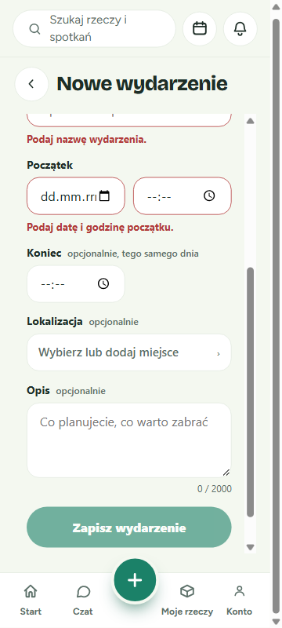

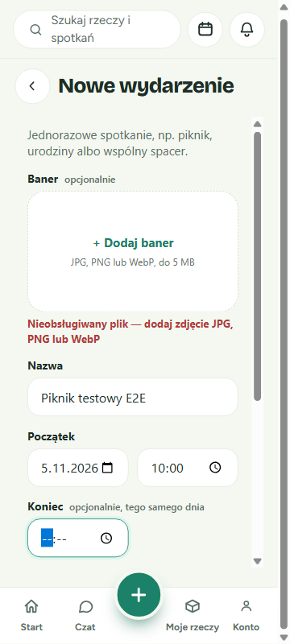
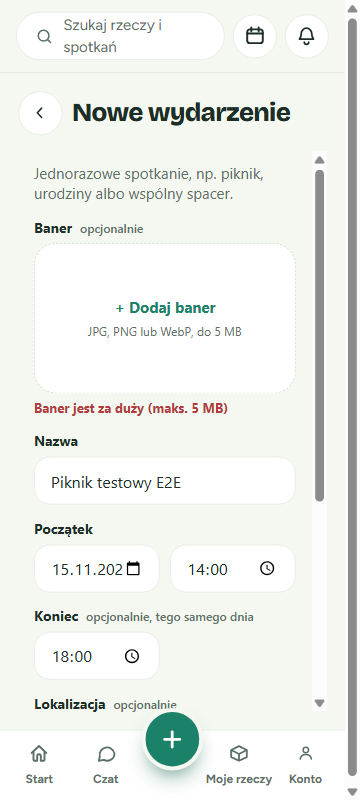
4.5 Location sheet accessibility — ✅ Passed
aria-modal dialog, all buttons type=button. The Tab cycle stays inside (✕ → place → + Dodaj nowe miejsce → Bez lokalizacji → ✕). Esc closes and returns focus to #event-location-button. Add-place uses aria-disabled with the errors "Podaj nazwę miejsca." / "Podaj adres miejsca."; maxLength is 255/500.
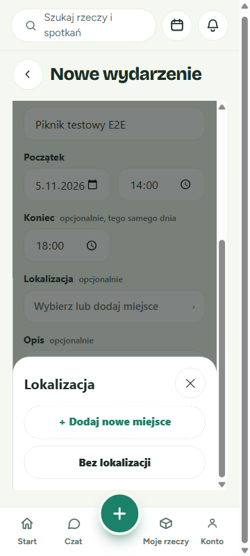
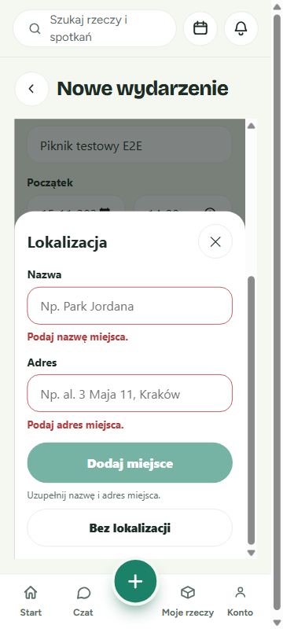

4.6 D — Plugin disabled fallback — ✅ Passed
Both registrations disabled → 🎈 card + copy, no iframe, "Wróć do dodawania" → /add. Re-enabled afterwards.

4.7 E — iframe height with the sheet open — ⚠️ Passed with issues
| Viewport | iframe | Host scrollHeight | Result |
|---|---|---|---|
| 360×800 (current 240 / min 560) | 150.8 → 710.8 (560) | 806 vs 800 | ⚠️ 6 px double scroll |
| 390×844 (current) | h 604 | 850 vs 844 | ⚠️ 6 px double scroll |
| 390×844 @ 246 / min 480 | h 598 | 844 = 844 | ✅ |
| 360×800 @ 250 / min 400 | h 550, bottom 700.8 (FAB ≈708) | 800 = 800 | ✅ |
| 1280×800 (current) | 182.8 → 742.8 (nav at 729.2) | 870 vs 800 | ⚠️ 70 px; 13 px under nav |
| 1280×800 @ 310 / min 400 | h 490 | 800 = 800 | ✅ |
Recommendation: { height: "calc(100dvh - 250px)", minHeight: "400px" } (phone chrome = 150.8 top + 24 padding + 70.8 nav ≈ 246). For widths ≥640 px, use responsive classes such as sm:h-[calc(100dvh-282px)] lg:h-[calc(100dvh-314px)], or a single calc(100dvh - 312px).
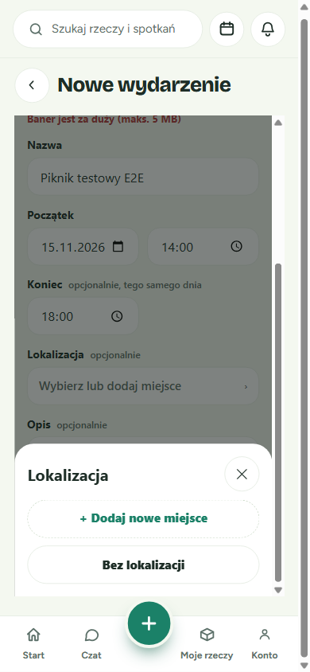
4.8 Desktop 1280×800 — ⚠️ Passed with issues
No horizontal scroll. Vertical overflow of 70 px, and the iframe runs 13 px under the bottom nav (m1).
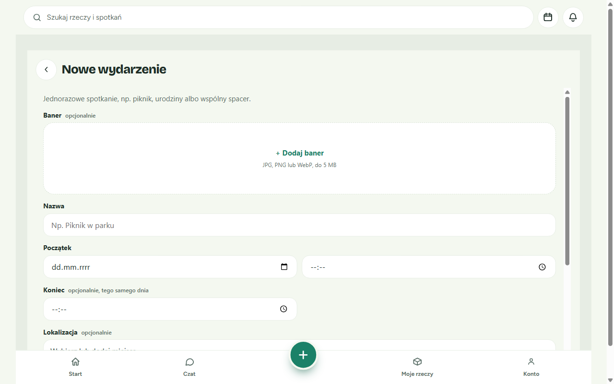
4.9 Backend error paths — ✅ Passed
| Call | Result |
|---|---|
POST /api/events {} | 400 "Podaj datę i godzinę początku." |
aware starts_at | 400 "Podaj datę i godzinę bez strefy czasowej." |
| end next day 00:00 | 400 "Koniec musi przypadać tego samego dnia co początek." |
| banner, other user's event | 403 "Możesz dodać baner tylko do swojego wydarzenia." |
| banner, missing event | 404 "Nie znaleziono wydarzenia." |
| banner, storage off | 409 "Dodawanie zdjęć jest chwilowo niedostępne" |
| PATCH plugin enabled as user | 403 "Access denied" (unchanged) |
4.10 F — Console — ✅ Passed
No errors from origin 3004. Only expected or pre-existing entries (see below).
Discrepancies
criticalC1 — extension_points vs extensionPoints: the host never resolves add.event. Fix by giving the backend PluginResponse a camel alias, or by mapping in api/plugins.ts. Add a test that uses the real response shape.
minorm1 — iframe height: 6 px host scroll on phones, 70 px on desktop with 13 px under the nav. Use the FRAME_STYLE above.
minorm2 — stale banner error: "Baner jest za duży" stays visible after the rejected file is discarded, while the submit is enabled.
cosmeticc1 — no progress bar on the saving screen, which the mockup shows.
Console & network
| Source | Message | Severity |
|---|---|---|
| /api/events/{id}/banner | 409 Conflict (×4, expected) | minor |
| /api/organizations/mine | 404 (pre-existing) | minor |
| react-dom_client.js:6805 | iframe sandbox allow-scripts + allow-same-origin warning (pre-existing) | minor |
| 127.0.0.1:8765/favicon.ico | 404 (test helper) | cosmetic |
Exit criteria
| Criterion | Status |
|---|---|
| Event created end to end with the caller's party and naive times | ❌ (shim only) |
| Banner gives an APPROVED row + two WebP files | ❌ (storage disabled) |
| Validation copy matches; blocked-submit click reveals errors | ✅ |
| Banner endpoint 404/403/409 order and copy | ✅ |
| Fallback when disabled; existing 403 "Access denied" | ✅ |
done → /add + toast | ✅ |
| 0070 creates the three tables | ✅ |
Recommendations
- Must fix before merge: C1
- Should fix soon: m1, m2
- Nice-to-have: c1; delete the stray
Eventsplugin row; re-run B with Spaces configured
Data created in the dev DB: 2 test users, plugin registration events, location d436c69a…, events b0a099e8…, 7f25009f…, e91aa41b…; no banner rows.